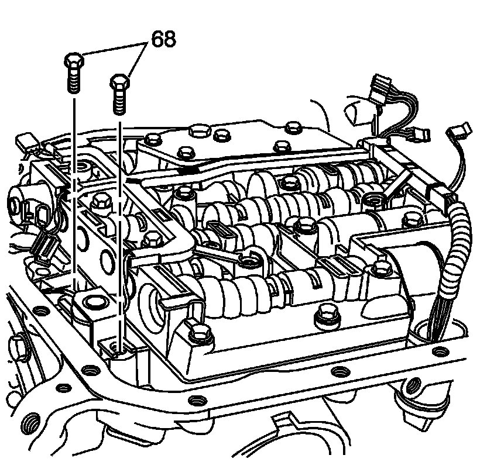
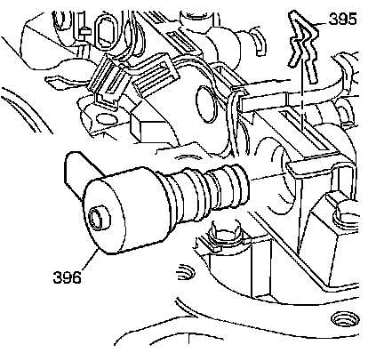
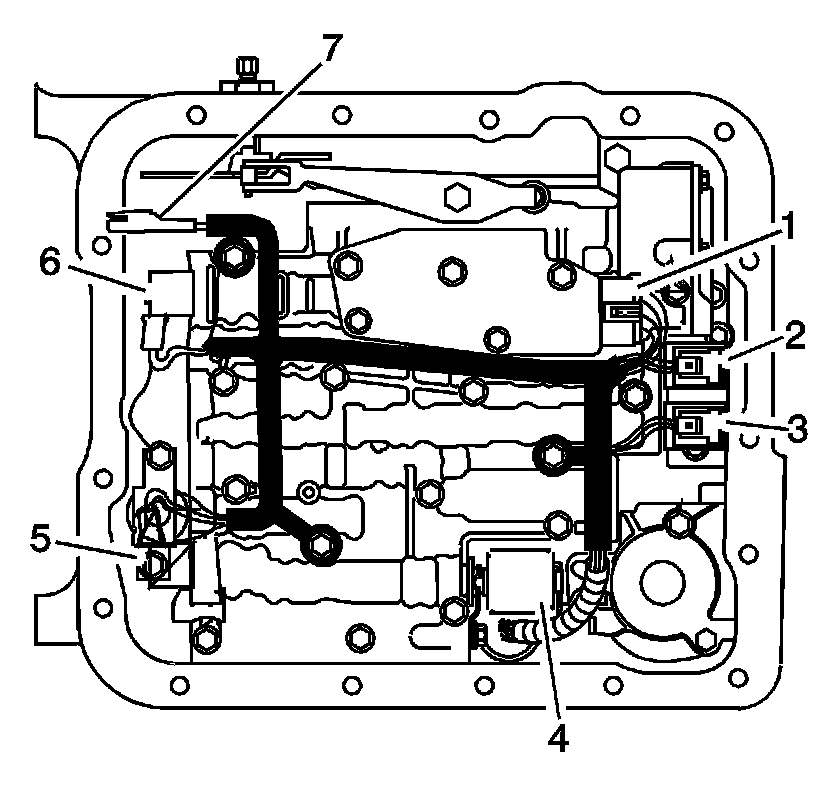

Control Valve Body Installation
Control Valve Body Installation
Tools Required
^ J 25025-5 Dial Indicator Mounting Post-M6 x 1.00
^ J 36850 Transjel Lubricant

Important: Secondary fluid pump connector (1) is used for M33 models only, connector (2) is used on ISS models.
1. Inspect the wiring harness and solenoid assembly for the following conditions:
^ Damage
^ Cracked connectors
^ Exposed wires
^ Loose electrical terminals
^ Damaged wiring loom and conduit
^ Worn, missing, or cut pass-through connector O-ring seal.
2. Install the transmission wiring harness pass-through connector into the transmission case. Ensure connector tabs lock into place.
3. Move the harness to one side in order to install the valve body.
Important: Valve bodies are model dependent.
4. Install the ball check valves (2-6, 8, 12) in the valve body and retain ball check valves with J 36850 or an equivalent.
Notice: Be sure all solenoids are installed with the electrical connectors facing the non-machined (cast) side of the valve body; otherwise, the solenoids will bind against the transmission case as the valve body bolts are tightened and damage may occur.
5. Install the valve body over the J 25025-5, and connect the manual valve link to the manual valve.
6. Install 2 valve body bolts (62) to hold the valve body in place.
7. Remove the J 25025-5.

8. Install the valve body bolts (62) that are shown only.
9. Finger tighten the bolts.

10. Inspect the transmission fluid pressure (TFP) manual valve position switch assembly for the following conditions:
^ Damage
^ Debris
^ Damaged or missing O-rings
^ Cracked connector
^ Loose electrical terminals
^ Poor terminal retention
^ Sediment in switch membrane

11. Install the TFP manual valve position switch (69) and bolts (62, 70).

12. Install the transmission wiring harness on the valve body.
Notice: Refer to Fastener Notice.
13. Install the torque converter clutch (TCC) solenoid valve and bolts (68).
Tighten the bolts to 8-14 N.m (6-10 lb ft).
Notice: Do not over-tighten the bolts. Over-tightening the bolts will distort the valve bores. Begin tightening from the center of the valve body tighten the bolts in a outward direction.
14. Inspect to ensure all of the valve body bolts are in the correct location.
Each bolt number refers to a specific bolt size, as indicated in the following list:
^ 1 - M6 x 1.0 x 65.0
^ 2 - M6 x 1.0 x 54.4
^ 3 - M6 x 1.0 x 47.5
^ 4 - M6 x 1.0 x 17.7
^ 5 - M6 x 1.0 x 35.0
15. Tighten the bolts from the center of the valve body working your way out in a spiral pattern to the outside edge.
Tighten the bolts to 8-14 N.m (6-10 lb ft).

16. Install the torque converter clutch pulse width modulation (TCC PWM) solenoid valve (396) and the solenoid retainer (395).

17. Snap the wiring harness in place on the valve body bolts. Ensure the harness loom tab is located under the TFP switch.
18. Install the wiring connectors to the electrical components as indicated in the following list:
^ 1 - TFP manual valve position switch
^ 2 - 1-2 shift solenoid
^ 3 - 2-3 shift solenoid
^ 4 - pressure control solenoid (PCS)
^ 5 - TCC PWM solenoid
^ 6 - 3-2 shift solenoid
^ 7 - input speed sensor (ISS) - model dependent